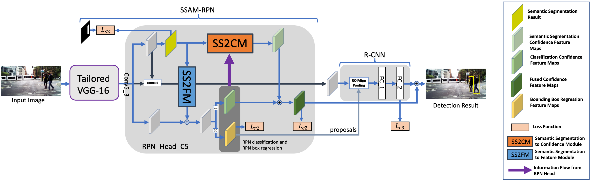

Our Projects


Motivation
Camera-based sensors offer affordable sensing in public spaces and hence, they have become particularly important in many autonomous systems, surveillance, and traffic applications. However, in trying to be robust and adaptive to a variety of scenarios, the existing techniques are highly computationally intensive. Most of the existing solutions either rely on cloud-based computing, where the raw video data from all cameras is sent to the server for processing and analysis, or very expensive edge-computing and smart camera-based solutions. Neither of these options are scalable for large-scale deployment. Furthermore, due to privacy concerns, it is prohibitive to send raw video data from the camera sensors to a central location for visual analytics using cloud-grade GPUs. In addition, localized processing is critical for ensuring a high level of responsiveness of the system.
Our research investigates novel architecture-aware algorithms and design methodologies that can lead to low-complexity and real-time visual analytics for deployment on edge devices with tight computational constraints.
The following are some of our projects in this area:
Fast and Accurate Pedestrian Detection
There is now a stricter requirement from government and society to protect vulnerable traffic participants. The pedestrian detection system in automotive industry is expected to record a CAGR of over 15% during the forecast period (2020 - 2025). The current pandemic also creates an urgent demand for automated systems that can enforce social distancing (e.g., people counting and measuring the distance between humans in public areas).
We proposed a multi-task deep learning architecture that inter-fuse the task of pedestrian/human detection and semantic segmentation to improve the accuracy of detecting pedestrians. Unlike existing methods, the proposed architecture can effectively detect occluded pedestrians and small pedestrians (i.e., pedestrians who are located at a far distance from the camera).
The computational complexity of the proposed pedestrian detection algorithm is very low which enables it to run on embedded platforms with low computational resources at high-speed. As such, it is suitable for edge computing to maintain privacy of the detected people. The proposed architecture can also achieve high detection performance with low resolution input images, which significantly reduces the computational complexity. Our framework achieves state-of-the-art detection performance on widely-used pedestrian detection dataset, and runs about 3X faster than state-of-the-art methods.

This work was supported in part by the National Research Foundation Singapore under its Campus for Research Excellence and Technological Enterprise (CREATE) Program with the Technical University of Munich at TUMCREATE.
Publications
- Chengju Zhou, Meiqing Wu, and Siew-Kei Lam, “A Unified Multi-task Learning Architecture for Fast and Accurate Pedestrian Detection”, IEEE Transactions on Intelligent Transportation Systems [PDF]
- Chengju Zhou, Meiqing Wu, and Siew-Kei Lam, “Group Cost-sensitive BoostLR with Vector Form Decorrelated Filters for Pedestrian Detection”, IEEE Transactions on Intelligent Transportation Systems [PDF]
- Chengju Zhou, Meiqing Wu and Siew-Kei Lam, “Fast and Accurate Pedestrian Detection using Dual-Stage Group Cost-Sensitive RealBoost with Vector Form Filters”, 25th ACM Multimedia (MM), October 2017 [California, USA] [PDF]
- Chengju Zhou, Meiqing Wu and Siew-Kei Lam, “Group Cost-sensitive Boosting with Multi-scale Decorrelated Filters for Pedestrian Detection”, 28th British Machine Vision Conference (BMVC), September 2017 [London, UK] [PDF]